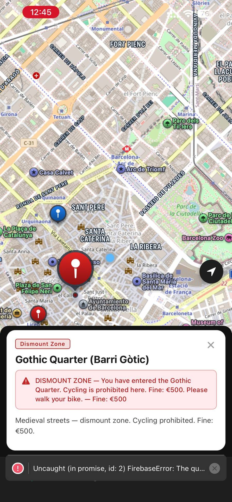
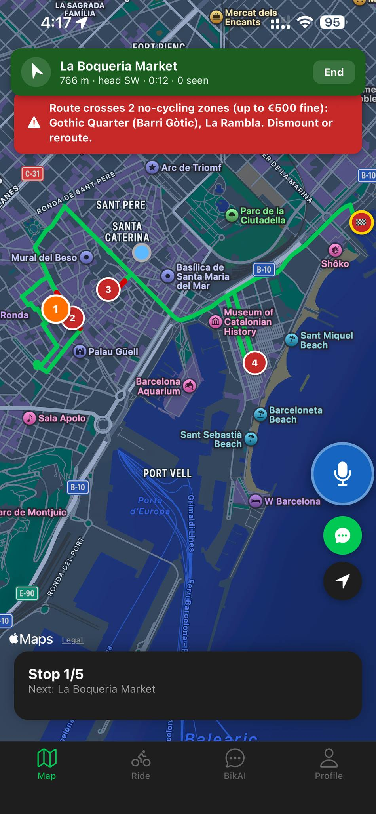
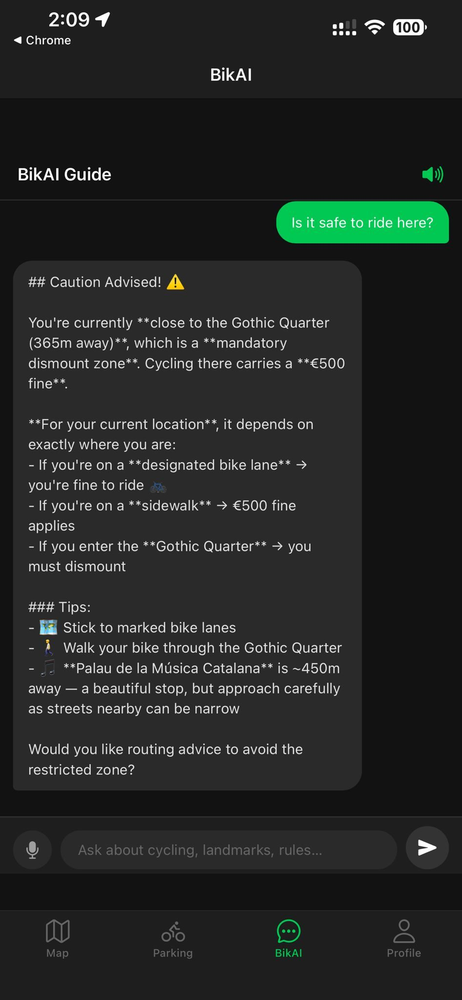
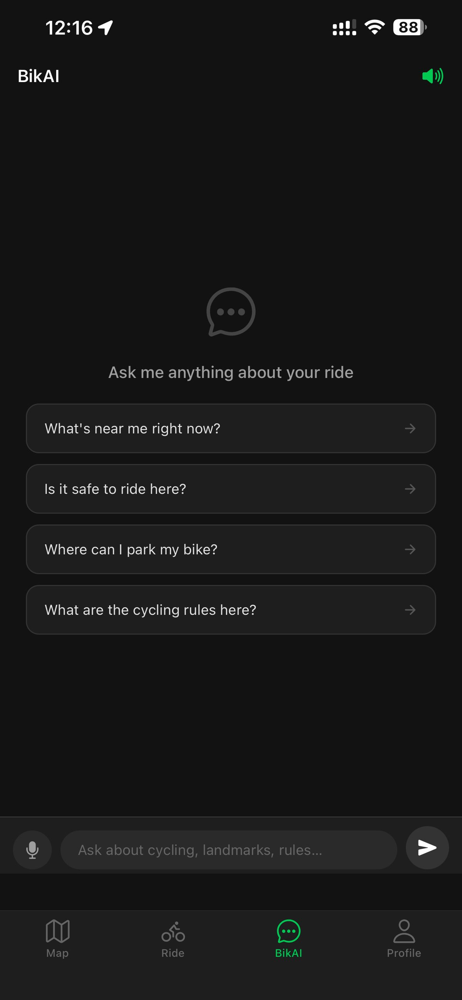
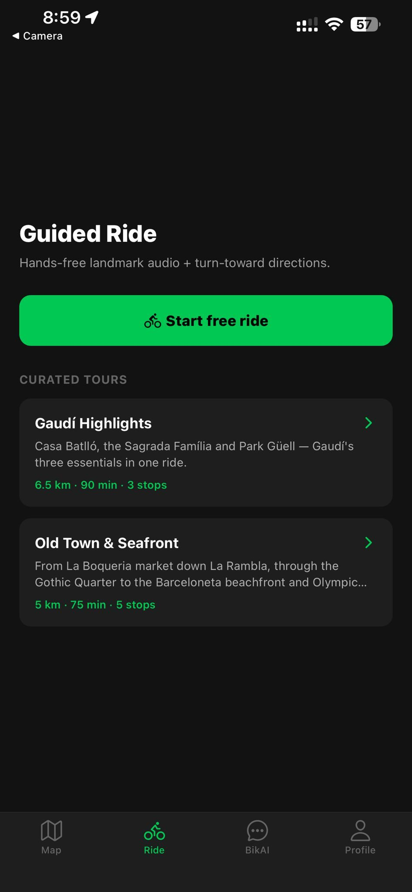
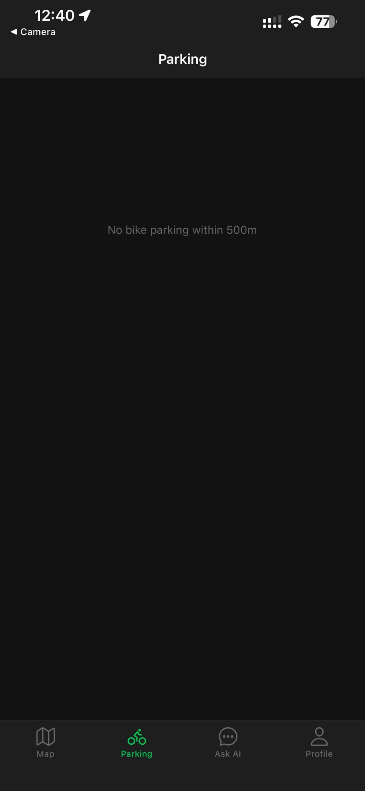

Pilotage de produit · IA · Livraison
Barcelona CycleGuide : une application vocale qui guide, prévient et raconte
Conçue, codée, testée et livrée avec un assistant de développement IA, pour un opérateur de tours à vélo électrique
Le problème
Un guide à vélo ne peut accompagner qu'un groupe à la fois, dans une seule langue, et seulement pendant le tour. Une partie de cette valeur peut-elle rester quand le guide n'est plus là, sans que le cycliste ait à s'arrêter pour regarder un écran ?
Ce que fait l'application
Le principe tient en une phrase : le cycliste ne doit jamais s'arrêter, baisser les yeux ni chercher. Tout se déclenche seul ou se pilote à la voix.
- Géofencing proactifUn cercle invisible d'environ 40 mètres entoure chaque lieu : dès que le cycliste y entre, l'histoire du lieu est lue à voix haute.
- Avertissements réglementairesL'application prévient avant l'infraction, pas après. De la prévention, au sens littéral.
- Assistant vocal multilingueUne IA conversationnelle qui répond aux questions orales, consciente de la position du cycliste.
- Navigation et stationnementManœuvres annoncées à la voix, recalcul automatique, et données ouvertes Bicing et Bicibox en temps réel.
Pile technique : React Native et Expo (SDK 54) pour iOS et Android, Firebase, un moteur de géofencing écrit maison (formule de Haversine), une intégration Claude, le routage OSRM, EAS Build et GitHub Actions.

(ouvre le fichier dans un nouvel onglet)
(ouvre le fichier dans un nouvel onglet)
(ouvre le fichier dans un nouvel onglet)
(ouvre le fichier dans un nouvel onglet)
(ouvre le fichier dans un nouvel onglet)
(ouvre le fichier dans un nouvel onglet)Trois décisions qui ont fait le projet
- Abandonner le no-codeLe premier prototype tournait sur FlutterFlow. Les limites de l'offre gratuite bloquaient les bibliothèques GPS et IA, le cœur du produit. Je me suis arrêté après une phase et demie au lieu de contourner.
- Tout reconstruireBascule complète vers React Native et Expo : une base gratuite et extensible, qui ne rencontrerait plus de plafond.
- Écrire mon propre géofencingLe service Radar.io refusait les inscriptions avec une adresse personnelle. Plutôt que d'abandonner la fonction qui donne son sens à l'application, j'ai codé la détection de proximité moi-même avec la formule de Haversine : trois heures, et la dépendance a disparu.
Ce qui a été testé
Sur de vrais iPhone et Android, via un serveur de développement. La chaîne vocale a été déboguée avec une surcouche de diagnostic à l'écran qui traçait chaque étape. Le géofencing a été testé dans et hors de Barcelone, et chaque langue prise en charge vérifiée à l'écran et à la voix.
C'est un prototype fonctionnel encore en test, pas un produit en production. Le document de reprise remis au fondateur liste lui-même les limites actuelles, sans les maquiller. C'est ainsi que je présente un livrable.
Ce que j'en retiens pour piloter des opérations
Face à un mur technique sans personne pour m'aider : je change de plateforme quand l'une atteint sa limite, j'écris la fonction moi-même quand un service me ferme la porte, et je finis par un document qu'un fondateur non technique peut lire. Un livrable que personne d'autre ne peut reprendre n'est pas un livrable.
→ La stratégie de mémoire dont ce projet est issu : Pink Ducks